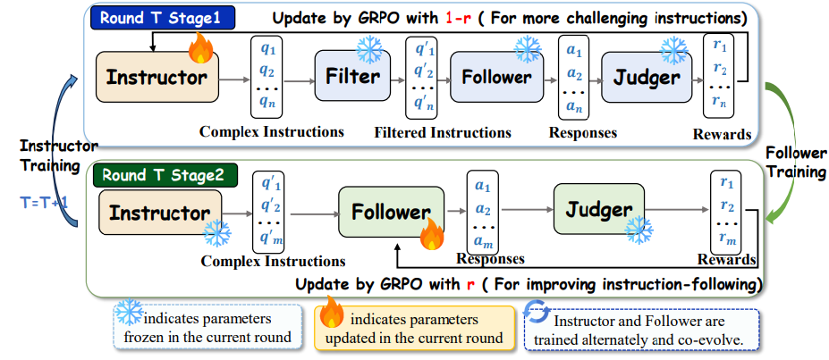
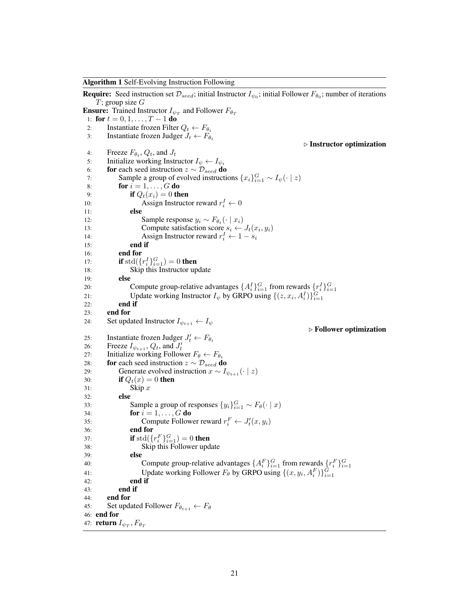
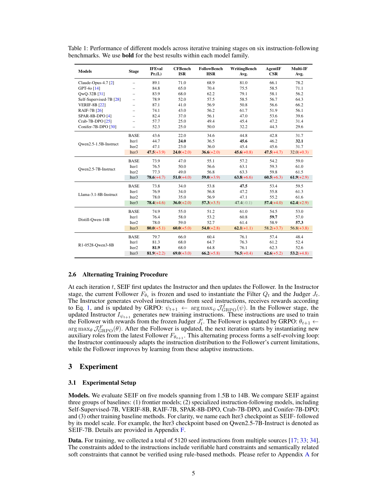
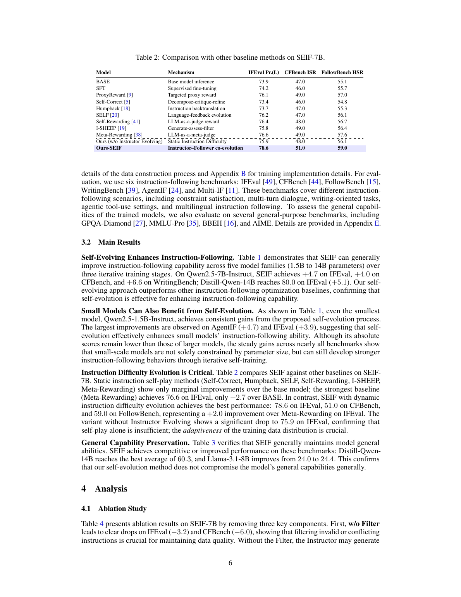
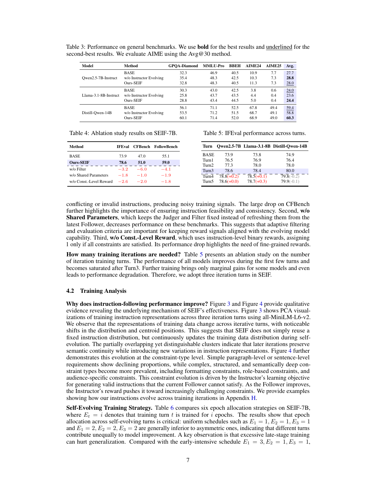
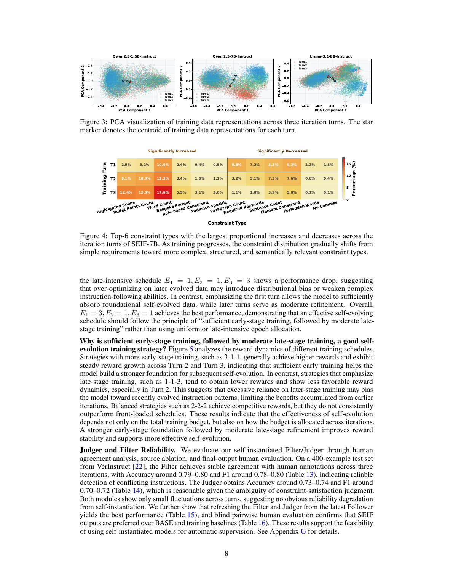
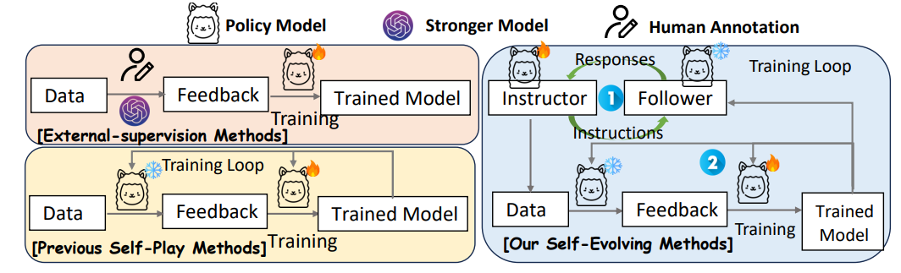

这篇论文到底解决什么问题
Instruction following 看似普通，其实比数学/代码 RLVR 更麻烦：没有唯一标准答案，很多约束是软的、语义的、格式和上下文混在一起。
外部监督路线的问题
用人类标注或强 teacher model 可以提供 reward 或偏好信号，但成本高，而且持续提升时需要持续收集更难、更贴近模型当前弱点的新数据。对于开放式 instruction following，这个成本会比可验证任务更高。
静态 self-play 的问题
很多自训练/自反馈方法会生成一批指令，然后反复训练。问题是模型变强后，旧指令可能变得太容易；数据难度不跟着模型能力走，训练信号很快变弱。
SEIF 的切入点就是：如果能让“出题者”持续根据“答题者”的当前短板出更难但仍可满足的题，那么 instruction-following 的训练数据就可以自适应进化。这和 curriculum learning 很像，但不是人工预设课程，而是由 Instructor 和 Follower 的博弈/协同产生。
SEIF 怎么做：四个角色形成闭环
论文中的四个角色并不是四个完全不同的模型产品，而是同一类 LLM 在不同阶段承担不同职责；真正训练的是 Instructor 和 Follower，Filter/Judger 是冻结的辅助角色。

输入：seed instruction
从公开数据源收集约 5120 条 seed instructions。它们通常是相对简单的任务，例如改写、问答、摘要、信息抽取、生成标题等。公开 `seed.parquet` 实测为 5119 行，列为 `prompt`。
Instructor：给 seed 加约束
Instructor 接收 seed question 和 constraint references，输出 JSON 格式的 atomic constraints。hard constraints 通常生成 3 个，soft constraints 通常生成 5 个。它不是直接回答问题，而是把简单任务改造成多约束任务。
Filter：去掉矛盾或无效指令
如果 Instructor 生成了内在矛盾的约束，例如“全小写”同时“第二段以 Agreement 开头”，Filter 返回 0，该样本 reward 归零或在 Follower 阶段跳过。Filter 的作用是防止 Instructor 通过制造不可满足任务来骗取“Follower 做不好”的奖励。
Follower：尝试回答新指令
当前 Follower 对通过 Filter 的 instruction 生成 response。Instructor 阶段会冻结 Follower，只用它暴露当前能力边界；Follower 阶段才更新 Follower，让它学会满足这些新 instruction。
Judger：逐约束打分
Judger 不判断“答案整体好不好”，而是对每个 constraint 输出 0/1，再平均成 satisfaction rate。这样奖励比“整条 instruction 全满足才给 1”更细，不会因为漏掉一个约束就完全没有梯度信号。
这个闭环的关键是 Filter 和 Judger 每轮都会从最新 Follower 实例化并冻结。也就是说，评估标准会随着 Follower 能力变化而刷新，但在某一轮训练内部保持静态，避免训练目标同时移动得太剧烈。
奖励信号到底是什么：Instructor 和 Follower 方向相反
理解 SEIF 的核心，需要看清同一个 Judger 分数在两个阶段的相反用法：Instructor 想让 Follower 失败，Follower 想让自己成功。
Instructor reward
其中 `A_t(x, y)` 是当前 Follower 对 instruction `x` 的约束满足率。Follower 满足得越差，Instructor reward 越高。
直觉：Instructor 被训练成“出当前模型做不好的题”，但不能出逻辑矛盾题。它的 reward 是 reversed reward。
Follower reward
Follower 的 reward 就是回答满足约束的比例。满足越多，reward 越高。
直觉：Follower 学的是“如何解刚刚由 Instructor 生成的边界题”。因此训练分布不是固定 benchmark，而是每轮被 Instructor 推动。

训练流程、数据和实现细节
SEIF 使用 GRPO 训练两个可更新角色。公开实现基于 EasyR1/VeRL，配合多个 vLLM endpoint 完成 answer/filter/judge。
| 项目 | 论文/实现中的设定 | 解释 |
|---|---|---|
| 训练框架 | EasyR1 / VeRL-style GRPO | 不训练 value model；同一 prompt 下采样多个输出，用组内 reward 标准化得到 advantage。 |
| seed instructions | 论文称约 5120；公开 `seed.parquet` 实测 5119 行 | seed 是简单原始任务，Instructor 负责加 constraints。 |
| rollout n | 5 | 每个 prompt 采样 5 个候选，用于 GRPO 的 group-relative comparison。 |
| global batch size | 96 | 配置文件 `examples/config*.yaml` 中一致。 |
| max prompt / response | 2048 / 8192 | 给多约束 instruction 和长回答留空间。 |
| learning rate | 1e-6 | actor 学习率；KL coefficient 为 1e-2。 |
| GPU | 8 H200 for training + 4 H200 for vLLM service | 这是论文表 8 的实验资源设定，复现成本不低。 |
| 训练步数 | Instructor T1/T2/T3: 13/13/13；Follower T1/T2/T3: 39/13/13 | 对应“前期训练更充分，后期适度 refinement”的策略。 |

评估证据：它到底评估了什么
这不是一个“聊天质量”泛评估，而是围绕 instruction constraints 的遵循能力评估。多个 benchmark 的指标名字不同，但核心都是“是否满足约束”。
| Benchmark | 评估对象 | 论文使用的指标 | 指标含义 |
|---|---|---|---|
| IFEval | 带可验证约束的自然语言 prompt | Pr.(L) | prompt-level strict/loose 变体中的 loose prompt accuracy；看整条 prompt 的约束是否满足。 |
| CFBench | 复杂多约束真实场景和 NLP 任务，含较多中文 | ISR | Instruction Satisfaction Rate，衡量 instruction 是否被满足。 |
| FollowBench | 五类约束：content, situation, style, format, example，并逐级增加难度 | HSR | Hard Satisfaction Rate，强调严格满足多级约束。 |
| WritingBench | 写作类任务，覆盖学术、金融、政治、文学、教育、广告等领域 | Avg. | 基于 criteria-aware critic 的平均写作质量/约束满足评分。 |
| AgentIF | agentic 场景下的长指令和工具/条件/格式/安全要求 | CSR | Constraint Satisfaction Rate，适合检验长、复杂、工具相关 instruction。 |
| Multi-IF | 多轮、多语言 instruction following | Avg. | 跨 8 种语言、三轮对话的平均 instruction following 表现。 |
论文还额外评估 GPQA-Diamond、MMLU-Pro、BBEH、AIME24/25，用来检查 instruction-following RL 是否损害通用能力。这个部分更像 safety check：SEIF 的目标不是提升数学推理，而是尽量不要为了 obey constraints 把原模型通用能力训坏。
主要结果：有效，但不是无条件暴涨
SEIF 在五个模型族上多数 benchmark 都有提升，最强证据来自动态 instruction difficulty 的对照和组件消融。
最值得看的不是绝对分数，而是和 baseline 的关系。对 Qwen2.5-7B，静态 SFT 几乎没有收益：IFEval 73.9 -> 74.2。Self-Rewarding、Meta-Rewarding 等 self-play / judge 类方法有提升，但 SEIF-7B 达到 IFEval 78.6、CFBench 51.0、FollowBench 59.0，高于 Meta-Rewarding 的 76.6、49.0、57.6。

消融说明了什么
| 去掉什么 | 结果变化 | 说明 |
|---|---|---|
| w/o Filter | IFEval -3.2, CFBench -6.0, FollowBench -4.1 | 没有过滤器，Instructor 会产生更多矛盾/不可行指令，数据和 reward 都变脏。 |
| w/o Shared Parameters | IFEval -1.8, CFBench -1.0, FollowBench -1.9 | Filter/Judger 不跟随最新 Follower 刷新时，监督标准不能贴近当前能力边界。 |
| w/o Const.-Level Reward | IFEval -2.6, CFBench -2.0, FollowBench -1.8 | 细粒度逐约束 reward 比整条 instruction 全对/全错更适合多约束训练。 |

训练策略：为什么不是越训越多越好
Table 6 比较了不同 epoch allocation。最佳策略是 `E1=3, E2=1, E3=1`：第一轮充分训练，后两轮适度 refinement。论文解释是，早期 instruction 分布提供基础能力；后期 instruction 更贴近当前弱点，但如果过度训练，会偏向最近生成的数据模式，带来分布偏置或过拟合。

Filter/Judger 靠不靠谱
SEIF 依赖模型自实例化的 Filter/Judger。如果这两个模块严重偏，整个 self-evolution 会变成 reward hacking 或自嗨。
Filter human agreement
论文从 VerInstruct 抽样 400 个例子，并人工修改一半为矛盾约束。Filter-T1/T2/T3 的 accuracy 约 0.79-0.80，F1 约 0.78-0.80。这个水平说明它能较稳定识别明显冲突，但不是形式化证明器。
Judger human agreement
Judger-T1/T2/T3 的 accuracy 约 0.73-0.74，F1 约 0.70-0.72。constraint satisfaction 本身更主观，因此数值低于 Filter。它可作为训练 reward，但仍可能偏向表面格式和显式约束。
最终输出的人类 pairwise evaluation 显示，SEIF 相比 BASE 胜率 62.8%、输率 19.7%；相比 w/o Instructor Evolving 胜率 56.5%；相比 Meta-Rewarding 胜率 53.5%。这说明提升不只是 Judger 自己偏好自己的产物，但优势对强 baseline 并非压倒性。
公开实现能说明什么
GitHub 仓库公开了数据、README、训练配置和核心 reward/dataset 代码；但工程体验更像研究代码，不像一键复现实验系统。
| 实现证据 | 观察 | 含义 |
|---|---|---|
| `examples/reward_function/instruction_reward.py` | 顶部有 Follower reward 注释块，后半部分是 Instructor reward；README 要求手动注释/取消注释切换。 | 方法可追踪，但 role 切换没有抽象成干净的配置开关，复现容易人为出错。 |
| `verl/utils/dataset.py` | Instructor `RLHFDataset` 激活；Follower dataset class 被注释，README 同样要求手动切换。 | 研究代码优先跑通实验，不强调 SOLID/可维护性。 |
| `vllm_answer/filter/judge/verifer.sh` | 分别启动不同端口和 GPU 的 vLLM 服务。 | SEIF 的 reward 不是纯本地函数，训练依赖多个在线推理服务，资源和调度成本较高。 |
| 公开 parquet 数据 | 包含 seed 和多个模型族/轮次的 `q_T*.parquet`。 | 数据生成结果是可检查的，论文不是只公开空壳代码。 |
公开内容 / local verification highlights
- X thread: X 线程公开内容 "https://x.com/HuggingPapers/status/2054361311392174537"
- Paper link: https://huggingface.co/papers/2605.07465
- Code link: https://github.com/Rainier-rq1/SEIF
- PDF: 33 pages, title/author metadata matched
- qwen7b-q_T1/T2/T3 rows: 5105 / 5104 / 5114限制和风险
SEIF 是有价值的 self-evolution recipe，但不要把它理解成“无监督自动变强”的通用答案。
训练分布仍然偏显式约束
训练数据围绕可列举 constraints 构造，真实用户需求常有隐含目标、外部文档引用、长期上下文和价值冲突。论文也承认真实 instruction 可能长达数千 token、交织多类约束。
Judger 不等于人类偏好
Judger 的 human agreement 只是 0.73-0.74 左右，说明 reward 有噪声。多轮 self-evolution 可能逐渐放大 Judger 偏差，尤其在语义软约束上。
提升主要在 instruction-following，不是泛智能
通用 benchmark 只是证明大体不坏。比如 Qwen2.5-7B 的 general avg 从 27.7 到 28.0，属于保持或轻微变化，不应解读为推理能力大幅提升。
复现成本高
论文配置需要 8 张 H200 训练和 4 张 H200 服务 vLLM。代码还需要手动切换 reward/dataset 角色，工程复现门槛不低。
我的判断：这篇论文真正值得学的是什么
SEIF 的价值不在于提出“自进化”这个大词，而在于给开放式任务设计了一个可执行的能力边界追踪器。
如果只看结果，SEIF 的提升是中等幅度：Qwen2.5-7B 在 IFEval +4.7、CFBench +4.0、WritingBench +6.6，确实有意义，但不是模型能力阶跃式改变。真正的 insight 是方法论：开放式任务没有 verifier 时，可以把任务拆成“生成边界题、过滤坏题、逐约束打分、训练解题者”四个可控接口。这个拆法比直接喊 self-improvement 更工程化。
我会把 SEIF 放在“self-play for data difficulty”而不是“fully autonomous self-improvement”类别里。它不是模型凭空发现新知识，也不是自动得到更深推理能力；它是在现有 seed tasks 和 constraint taxonomy 的空间里，持续把训练样本推向当前模型的薄弱区域。对于 instruction following、tool-use constraints、agent policy compliance 这类“显式规则多、答案空间开放”的任务，这个范式很有迁移价值。
但它要进入生产级训练，还需要三个补强：第一，Filter/Judger 应该更模块化，最好混合 rule verifier、人类偏好样本和外部强 judge；第二，Instructor 的目标不能只是不被当前 Follower 满足，还要惩罚模板化难题和 distribution drift；第三，工程实现要把 role 切换和 vLLM 服务编排配置化，否则多轮实验很容易出错。
术语解释与概念边界
- Instruction following
- 模型按用户约束完成任务的能力，包括格式、内容、安全、顺序和禁止事项。
- SEIF
- 本文讨论的核心是让 instruction-following 评估和训练更细粒度，关注模型到底漏掉了哪类约束。
- Constraint decomposition
- 把复杂指令拆成多个可检查约束。这样可以区分“整体失败”和“只漏了某一条要求”。
- 局部可验证性
- 越能把指令拆成独立检查点，训练信号越清楚；开放式写作和审美判断则更难自动化。
证据边界与资料索引
目标 X 帖只有两条主内容：论文标题、paper 链接、code 链接和一句机制摘要。真正分析必须落到 arXiv 论文、Hugging Face metadata、GitHub README/代码和公开 parquet 数据。
X 线程
公开页面读取到 HuggingPapers 原帖：标题为 SEIF: Self-Evolving Reinforcement Learning for Instruction Following，配图一张，并在回复中给出 paper/code 短链。短链分别解析到 Hugging Face Papers 和 GitHub。
created_at: 2026-05-13 UTClikes: 64retweets: 15
论文与 HF 页面
arXiv MCP 和 PDF 元数据核验题名、作者和 33 页 PDF；Hugging Face API 核验 daily paper 信息、Fudan University organization、GitHub repo、upvotes 和 abstract。
arXiv 2605.07465v1cs.CLHF upvotes 26
GitHub 与公开数据
读取 `Rainier-rq1/SEIF` README、训练配置、reward/dataset 关键文件和目录树；下载 `seed.parquet` 与 Qwen-7B 三轮 `q_T*.parquet`，核验行数和列结构。
EasyR1/VeRLvLLM servicespublic parquet
